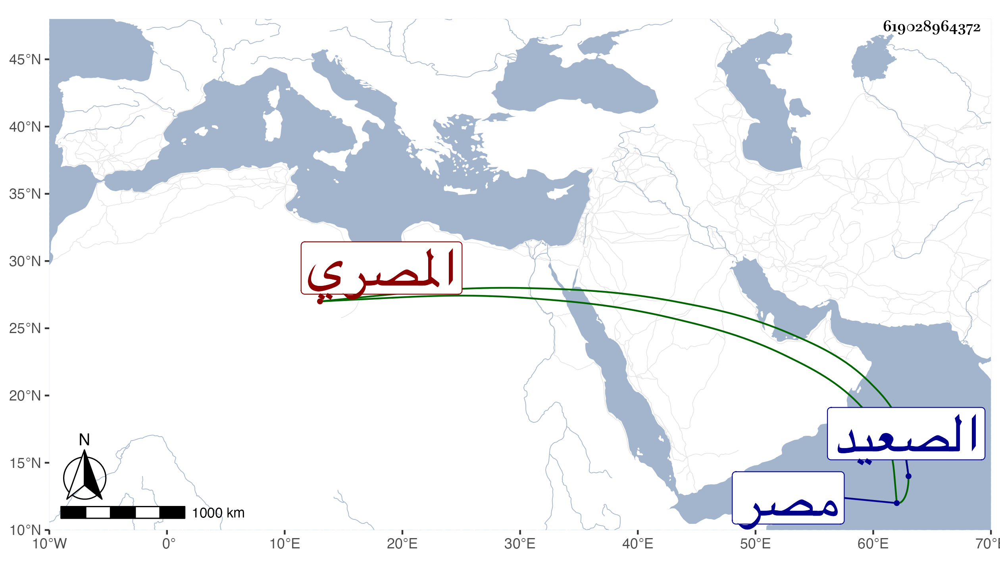

0902Sakhawi.DawLamic.ITO20230111-ara1.EIS1600.619028964372
Biography ID: 619028964372
1009
سليمان بن عمر بن عبد العزيز بن أحمد بن محمد بن علي علم الدين أو فخر الدين بن الخواجا السراج المصري الماضي أبوه ويعرف بابن الخروبي وأمه بحار ابنة ناصر الدين بن مسلم . ولد تقريبا سنة ثمانمائة أو قبلها بمصر ، ونشأ بها وقرأ بعض القرآن وأجاز له المجد اللغوي والشرف بن المقري وعبد الرحمن بن حيدر وغيرهم ، وعاش في ترف كثير ثم نزل به الحال ، وصار يرتزق ببعض المتجر ، وسافر بسببه إلى الصعيد ثم انهبط وتجمدت عليه ديون ربما سجن ببعضها أجاز لنا ومات في شعبان سنة أربع وستين . وسيأتي ذكر إخوته الأربعة في المحمدين إن شاء الله .
